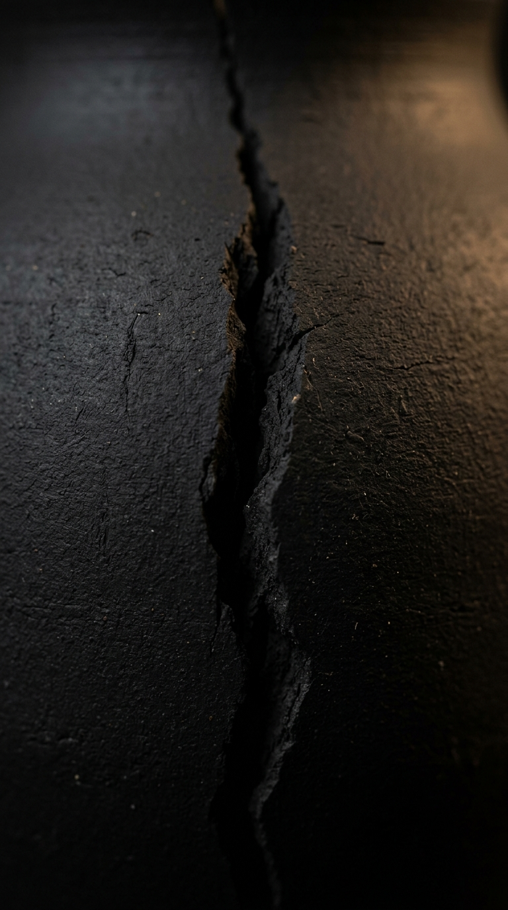
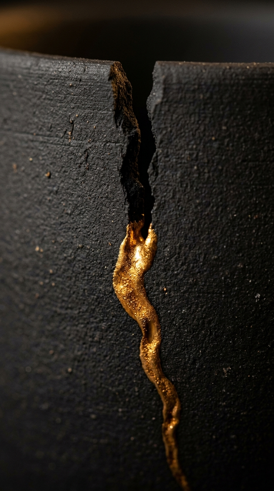

They broke you.
Not bent — broken.
A crack. Darkness. Silence.
And it feels like the end.
But there is an ancient art — kintsugi.
You don't hide what's broken.
You fill the cracks with gold.
The break becomes the pattern.
The immovable mind.
You are not broken.
You are forged.
Where you cracked,
now there is gold.